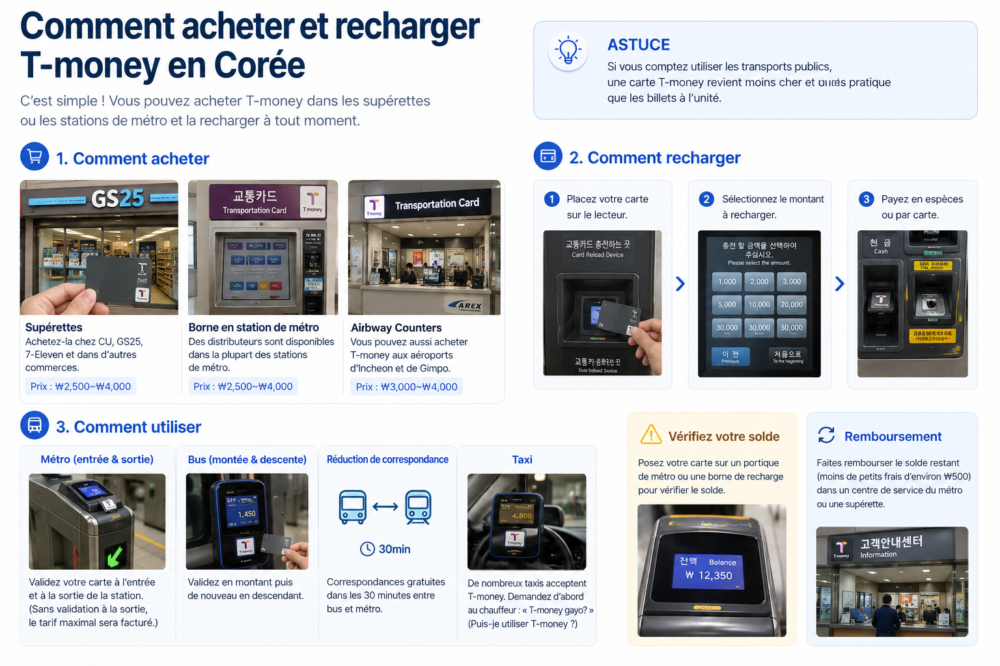
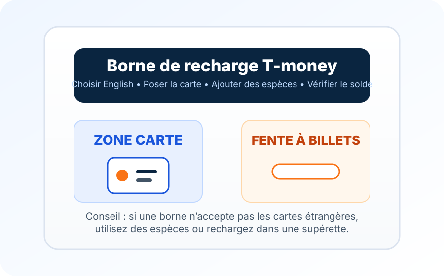

« J’ai acheté la carte, mais le portillon indique un solde nul. »
L’achat de la carte et son chargement sont deux étapes distinctes. Allez à une machine ou dans une supérette participante et ajoutez des wons avant de réessayer le portillon.
La plupart des visiteurs n’ont pas besoin de comprendre tout le système de paiement des transports coréens. Ils veulent surtout un moyen qui fonctionne quand le trajet depuis l’aéroport se termine et que les déplacements en ville commencent. La carte physique T-money remplit toujours bien ce rôle : ajoutez des wons, validez au portillon ou au lecteur du bus, puis utilisez la même carte dans une grande partie du réseau de transports publics coréen.
Depuis juillet 2025, T-money est également disponible dans Apple Wallet sur les iPhone et Apple Watch compatibles. L’achat ou la recharge directement dans Wallet exige toujours une carte de paiement émise en Corée du Sud. Toutefois, les voyageurs étrangers disposent désormais d’une autre possibilité : l’application MobileTmoney permet de recharger via Apple Pay avec certains réseaux de cartes étrangères. Si votre téléphone ou votre carte n’est pas compatible avec cette solution, la carte physique reste l’option la plus simple.

Le bon format de T-money dépend moins de la technologie qui paraît la plus simple que de la manière dont vous pouvez le recharger.
| T-money physique | T-money dans Apple Wallet | Application KOREA TOUR CARD Tmoney | |
|---|---|---|---|
| Pour qui ? | La plupart des visiteurs, surtout ceux qui n’ont que des cartes de paiement étrangères | Les utilisateurs d’iPhone ou d’Apple Watch compatibles : recharge directe dans Wallet avec une carte coréenne, ou recharge via MobileTmoney si leur réseau de carte Apple Pay est pris en charge | Les voyageurs avec un Android NFC compatible qui souhaitent une solution mobile |
| Comment l’obtenir | Acheter la carte après l’arrivée | Ajouter une carte T-money prépayée dans Apple Wallet | Créer et gérer T-money via l’application KOREA TOUR CARD Tmoney |
| Comment la recharger | Les espèces aux machines du métro ou dans les supérettes participantes sont le choix le plus sûr par défaut | Dans Apple Wallet, achat ou recharge directe avec une carte de crédit ou de débit émise en Corée du Sud ; via MobileTmoney, recharge avec Apple Pay pour les cartes Mastercard, American Express, UnionPay et JCB prises en charge | L’application officielle annonce actuellement la recharge et le remboursement avec les cartes internationales acceptées |
| Principale limite | Il faut porter la carte et parfois prévoir des espèces pour la recharge | La recharge directe dans Wallet exige une carte coréenne ; MobileTmoney accepte seulement les réseaux étrangers actuellement annoncés, sans Visa dans cette liste | La compatibilité du téléphone et du NFC compte : vérifiez l’application avant d’en dépendre |
Pour un court voyage, choisir la carte physique n’a rien de dépassé. C’est souvent la version qui impose le moins de complications à un visiteur étranger.
Préparez votre connexion mobile pour la Corée
T-money sert à payer le métro et le bus. Une eSIM de voyage peut fournir des données mobiles pour les cartes, les itinéraires et les messages, mais elle ne remplace pas T-money et ne recharge pas le solde de transport. Vérifiez la compatibilité de votre téléphone et les conditions du forfait avant d’acheter.
Lien d’affiliation : Korea Inside peut percevoir une commission sans frais supplémentaires pour vous.
VisitKorea indique actuellement les supérettes GS25, CU et 7-ELEVEN dans tout le pays, ainsi que les centres d’information des stations des lignes 1 à 8 du métro de Séoul. Le prix courant annoncé est d’environ 3 000 à 5 000 ₩, mais il peut varier selon le modèle et le vendeur.
Pour la plupart des visiteurs, il y a peu de raisons d’acheter la carte avant le départ. L’achat après l’arrivée est normalement simple. Cherchez le logo T-money dans une supérette ou une station plutôt qu’une version touristique particulière.
Le prix de la carte et le solde qu’elle contient sont distincts. Si vous achetez la carte puis allez directement au portillon sans la recharger, la carte seule ne paiera pas votre trajet.
Pour les portillons du métro, prévoyez une carte de transport par personne devant payer son trajet. Il n’est pas possible de valider plusieurs fois la même carte pour faire passer toute la famille par des portillons différents. Chaque enfant soumis au paiement du trajet doit disposer de sa propre carte, avec la bonne catégorie d’âge enregistrée.
Dans certains bus de Séoul, le conducteur peut débiter plusieurs passagers sur une seule carte si vous lui indiquez leur nombre avant la validation. Il s’agit d’une procédure propre à ces bus, et non d’un remplacement des cartes individuelles lorsque le déplacement comprend aussi le métro. Les réductions de correspondance pour plusieurs personnes sont plus limitées, notamment si le groupe emprunte ensuite un train. Pour la plupart des familles, une carte par voyageur payant évite les complications.
Avant de racheter une carte, essayez de vérifier le solde de l’ancienne. Une carte T-money ordinaire en bon état peut encore fonctionner lors d’un nouveau séjour, mais une carte ancienne ou promotionnelle n’est pas forcément reconnue partout. Si un automate ne la lit pas, demandez conseil au personnel du métro ou à un comptoir T-money participant avant d’y ajouter de l’argent.
Cherchez une supérette vendant T-money dans votre terminal d’arrivée ou près de la gare ferroviaire de l’aéroport. Vérifiez qu’elle a bien des cartes de transport en stock et qu’elle peut les recharger : une ouverture tardive ne garantit pas tous les modèles ni tous les services. Si l’achat s’avère difficile, un billet distinct pour l’AREX Express ou un autre transfert aéroportuaire dont vous avez confirmé la disponibilité permet de rejoindre Séoul, puis d’acheter T-money pour les jours suivants.
Il y a rarement une bonne raison de charger beaucoup d’argent dès le premier jour.
Pour un court séjour à Séoul, Korea Inside conseille généralement de commencer par environ 20 000 à 30 000 ₩, puis de recharger au besoin. C’est un conseil de préparation, pas une règle officielle T-money. Vos dépenses dépendent de la fréquence des trajets, des distances et de l’utilisation éventuelle du solde chez les commerçants participants.
Commencer avec un petit montant simplifie aussi la fin du séjour. Quelques milliers de wons restants sont bien moins gênants qu’un gros solde à faire rembourser au dernier moment avant l’aéroport.
Pour une T-money physique classique, mieux vaut toujours prévoir des espèces lorsqu’on vient de l’étranger. Les machines du métro sont simples une fois la fente à billets repérée ; les supérettes participantes peuvent aussi recharger la carte.
Ne confondez pas ces machines avec les nouvelles bornes de Séoul acceptant les cartes internationales. En 2026, la ville a étendu le paiement par carte étrangère sur de nouvelles bornes pour certains produits, comme les forfaits courts Climate Card et les billets à trajet unique. Cela ne signifie pas que toutes les machines de recharge T-money acceptent désormais une carte étrangère.
Si une machine refuse votre carte, inutile de répéter le même paiement. Utilisez des wons ou faites recharger la T-money dans une supérette participante.
Le solde affiché au portillon ou à la machine suffit à la plupart des visiteurs. Rechargez lorsqu’il baisse, plutôt que de tenter de calculer tous les trajets à l’avance.
Tout dépend du produit affiché à l’écran. Depuis mars 2026, certains nouveaux distributeurs du métro de Séoul acceptent des cartes bancaires émises à l’étranger pour des produits précis, notamment les billets à l’unité et les forfaits courts de la Climate Card. Cela ne signifie pas que toutes les cartes T-money physiques prépayées peuvent être rechargées avec une carte étrangère. Les consignes municipales de septembre 2026 distinguent encore ces achats des recharges ordinaires de cartes prépayées.
Pour recharger aujourd’hui une carte T-money en plastique classique, prévoyez des wons en espèces et sélectionnez la fonction de recharge d’une carte physique, ou demandez à une supérette participante d’ajouter du crédit en espèces. Le fait qu’une Visa ou Mastercard étrangère ait permis d’acheter un billet à l’unité ne prouve pas que le même automate pourra recharger T-money. Acheter une carte, acheter un billet et créditer un titre de transport sont trois opérations différentes.
Il faut distinguer ce problème d’une diminution du solde après un trajet terminé : celle-ci peut correspondre à un tarif normal ou à un ajustement lié à la distance. Vérifiez d’abord si la somme manquante vient d’une recharge non enregistrée ou d’un trajet facturé.
En octobre 2026, ne comptez pas sur la présentation directe d’une carte bancaire étrangère au valideur comme mode normal d’accès au métro ou au bus. T-money a annoncé un déploiement progressif de cette fonctionnalité à partir de 2027. Ce futur dispositif est distinct des paiements par carte étrangère déjà possibles sur certains distributeurs de billets. Pour votre voyage actuel, utilisez une carte de transport reconnue, une T-money mobile correctement configurée ou un billet accepté par le service emprunté.


Après le premier trajet, le geste est simple : validez une fois à l’entrée du métro, puis à la sortie. La validation de sortie termine le trajet et permet au système de calculer le tarif.
Prenez la même habitude dans les bus : validez en montant, puis avant de descendre.
Cette deuxième validation s’oublie facilement quand la porte est ouverte et que tout le monde descend. Elle compte pourtant : pour calculer une réduction de correspondance, le système doit savoir où le premier trajet s’est terminé et où le suivant commence.
Si vous validez correctement entre des bus et métros admissibles, T-money peut appliquer automatiquement la réduction correspondante. Le délai précis varie selon le réseau et l’heure. Inutile de transformer cette habitude simple en étude d’horaires : validez correctement à chaque fois.
Dans le système tarifaire intégré des bus et du métro de Séoul, une correspondance doit normalement commencer dans les 30 minutes suivant la dernière validation de sortie. De 21 h à 7 h, ce délai passe à 60 minutes. Jusqu’à quatre correspondances peuvent être reconnues sur cinq trajets consécutifs. Reprendre le même bus ou la même ligne n’ouvre pas droit à cette réduction : il ne s’agit pas d’un forfait de déplacements illimités.
Avant de conclure à une erreur, vérifiez quatre points : avez-vous validé en sortant ? Le trajet suivant a-t-il commencé dans le délai autorisé ? Était-ce la même ligne ? Avez-vous utilisé la même carte tout au long du parcours ? Les réductions dépendent aussi des exploitants et des lignes participants ; les règles peuvent différer hors de Séoul.
Un nouveau montant débité lors d’une correspondance ne signifie pas forcément que la réduction a échoué. Le système peut ajouter une différence tarifaire ou un supplément lié à la distance. Regardez l’ensemble du trajet, pas seulement la somme affichée sur un valideur. En cas de doute, notez le numéro du bus, les stations, les heures de validation et les informations de la carte, puis demandez le calcul à l’exploitant ou au personnel de station.
N’espérez pas que le valideur du bus ou du métro suivant corrigera automatiquement un trajet dont la sortie n’a pas été enregistrée. Cette validation manquante peut modifier les tarifs et les droits aux correspondances ultérieures. Si vous le remarquez, contrôlez votre solde et expliquez l’itinéraire précédent à un agent si le tarif suivant paraît inhabituel. La prochaine fois, validez en vous préparant à descendre, pas une fois dehors.
Pas automatiquement. À Séoul, l’exception permettant de payer plusieurs passagers avec une carte dans le bus comporte des conditions sur les validations d’entrée et de sortie ainsi que le nombre de voyageurs ; elle ne s’applique pas aux correspondances avec le métro. Une seule carte est donc peu adaptée à un groupe mêlant bus et train. Des cartes séparées permettent de suivre plus facilement les tarifs et les correspondances de chacun.
Le métro et les bus urbains sont la raison principale d’acheter T-money, mais son réseau dépasse Séoul.
Le guide officiel actuel indique une couverture métro et bus dans de nombreuses régions coréennes, dont les grands réseaux métropolitains. Il mentionne aussi les taxis dans un grand nombre de villes et de comtés.
L’acceptation dans les taxis n’est pas totalement uniforme. T-money prévient que des restrictions régionales peuvent s’appliquer : mieux vaut repérer un lecteur ou le logo T-money que supposer que tous les taxis acceptent le solde.
T-money fonctionne aussi dans les commerces et lieux partenaires affichant la marque d’acceptation correspondante. C’est utile pour un achat occasionnel en supérette, mais considérez-la comme une carte de transport avec quelques usages de paiement supplémentaires, plutôt que comme le remplacement d’une carte bancaire classique.
Certains cars express, transports interurbains, guichets ferroviaires et péages acceptent aussi des produits ou types de cartes T-money particuliers, selon des règles plus spécifiques. Pour préparer un voyage ordinaire, les bus et métros restent les usages de base les plus fiables.
AREX avec arrêts (All-Stop) : oui, avec une carte T-money de transport en état de marche. Ce service utilise les portillons ordinaires et s’arrête notamment à Hongik University et à Gongdeok. Il peut convenir dès l’arrivée si votre carte physique est chargée ou si vous disposez d’une carte mobile compatible.
AREX Express : achetez un billet Express distinct. Le train direct sans arrêt dispose de sa propre billetterie et de ses modalités d’embarquement. Ne vous présentez pas à son accès en supposant que le solde d’une T-money ordinaire remplace le billet spécifique. Vérifiez le type de train avant d’acheter ou de valider.
La large couverture de T-money en Corée n’en fait pas un billet universel pour les trains longue distance. Les trains à réservation, certains autocars interurbains ou express et des liaisons aéroportuaires particulières peuvent exiger un billet séparé ou une autre procédure de paiement. Pour tout service autre qu’un métro ou un bus local ordinaire, suivez les consignes de l’exploitant.
Apple et T-money ont lancé T-money dans Apple Wallet le 21 juillet 2025. Un iPhone ou une Apple Watch compatible peut désormais servir de carte de transport prépayée. L’ancien conseil selon lequel T-money ne peut pas être utilisé sur iPhone n’est donc plus exact.
Apple indique actuellement une compatibilité avec les iPhone Xs et Xr ou ultérieurs sous iOS 17.2 ou ultérieur, et les Apple Watch Series 6 ou Apple Watch SE de 2e génération ou ultérieures sous watchOS 10.2 ou ultérieur. Seule T-money prépayée est prise en charge dans Apple Wallet.
Avec le mode Express activé, vous pouvez approcher l’appareil du lecteur sans ouvrir Wallet à chaque trajet. Le solde est aussi visible dans Wallet.
Pour un visiteur étranger, la question essentielle reste la recharge. Les consignes actuelles de l’assistance Apple exigent une carte de crédit ou de débit émise en Corée du Sud pour acheter ou recharger T-money depuis Apple Wallet.
Les voyageurs étrangers ont toutefois une autre option : l’application MobileTmoney. Selon sa fiche App Store, elle propose une utilisation de base sans inscription et une recharge via Apple Pay avec Mastercard, American Express, UnionPay et JCB. Visa ne figure pas actuellement dans la liste des réseaux pris en charge pour cette recharge.
Posséder un iPhone ne suffit donc pas à garantir une recharge facile. Si le réseau de votre carte Apple Pay n’est pas pris en charge par MobileTmoney, prévoyez une carte T-money physique ou un autre moyen de recharge confirmé.
Une carte T-money ne peut être utilisée que sur un appareil Apple à la fois. Pour disposer de cartes distinctes sur iPhone et Apple Watch, Apple indique que chaque appareil doit avoir sa propre carte.
Les écrans de l’application, les réseaux de paiement acceptés et les décisions des banques émettrices peuvent évoluer. Si l’option pour les utilisateurs étrangers n’apparaît pas, consultez la fiche officielle récente plutôt qu’une ancienne capture d’écran. Si votre carte mobile possède du solde mais ne fonctionne pas, contactez l’assistance T-money avant de la supprimer ou de la réémettre : sans vérification des règles de récupération, le remboursement du solde peut devenir plus difficile.
T-money propose aussi l’application KOREA TOUR CARD Tmoney pour les téléphones Android compatibles.
La fiche officielle actuelle de Google Play indique que l’application peut utiliser le NFC comme T-money, afficher le solde et l’historique et effectuer recharges ou remboursements avec des cartes internationales acceptées, dont Mastercard, Visa, American Express, JCB et UnionPay.
Séoul a également présenté KOREA TOUR CARD comme une solution de recharge par carte étrangère pour les voyageurs sous Android.
Le mot « compatible » compte. Le matériel NFC, la configuration et la prise en charge peuvent varier. Installez et vérifiez donc l’application avant de faire de votre téléphone votre unique carte de transport en Corée.
Activez le NFC et vérifiez que votre appareil peut réellement créer et utiliser une carte de transport dans l’application officielle KOREA TOUR CARD Tmoney. La présence du NFC ne garantit pas à elle seule la compatibilité du modèle. Confirmez que le solde a été chargé, repérez où le consulter et prévoyez un autre moyen de paiement pour le premier trajet.
La fiche de l’application annonce plusieurs réseaux de cartes internationales, dont Visa, mais un paiement individuel peut tout de même être refusé. En cas d’échec, vérifiez les conditions de l’application et de la carte avant de multiplier les tentatives. Si vous devez embarquer immédiatement, une carte physique rechargée en espèces est souvent plus rapide.
Un enfant ou adolescent ne doit pas simplement utiliser une T-money adulte en s’attendant à voir apparaître automatiquement le tarif réduit.
VisitKorea indique actuellement que les voyageurs de moins de 18 ans doivent enregistrer leur date de naissance pour bénéficier de la réduction de transport correspondante. Une supérette proposant T-money est un endroit pratique où demander cet enregistrement lors de l’achat.
En famille, faites-le au début du séjour plutôt que de découvrir après plusieurs trajets que la carte facture le tarif adulte.
Vérifiez d’abord que la date de naissance de l’enfant est correctement enregistrée sur la carte pour bénéficier du tarif lié à son âge. VisitKorea indique aux voyageurs de moins de 18 ans admissibles aux tarifs enfant ou jeune de faire enregistrer cette date, notamment dans une supérette participante. Acheter simplement une petite carte ou un modèle décoré pour les enfants ne garantit pas l’activation du bon tarif.
Vérifiez la catégorie tarifaire avant d’utiliser les cartes pendant plusieurs jours, surtout si plusieurs cartes familiales se ressemblent. Les exonérations de trajet pour les très jeunes enfants dépendent du transporteur et de la situation. Contrôlez donc la règle actuelle du réseau utilisé plutôt que de vous fier au dessin de la carte.
Un solde insuffisant est généralement un contretemps, pas une catastrophe.
Les machines de recharge et de nombreux portillons affichent le solde restant. Les consignes officielles du métro de Séoul précisent aussi que les machines d’ajustement tarifaire près des portillons peuvent servir lorsque le solde T-money est insuffisant.
Si le solde baisse avant un long trajet, il est plus simple de recharger avant les portillons que de régler le problème avec des personnes qui attendent derrière vous.
Non. Si le solde est insuffisant, cherchez un automate de régularisation tarifaire ou de recharge près des portillons, ou demandez au personnel où régler la différence. Gardez la carte pour faire vérifier le trajet en cours. Si le lecteur ne reconnaît pas du tout la carte, le problème est différent d’un manque de solde : le personnel devra peut-être contrôler la carte ou le portillon.
Avant un trajet plus long vers l’aéroport ou entre plusieurs villes, vérifiez le solde plutôt que de supposer que le montant restant après un court trajet urbain suffira. Évitez aussi de charger une somme importante en fin de séjour simplement pour ne jamais voir apparaître un avertissement de solde insuffisant.
Le remboursement du solde T-money est possible, mais c’est un domaine où les anciens guides de voyage peuvent induire en erreur.
Lors de cette vérification d’août 2026, VisitKorea indique que les soldes supérieurs à 50 000 ₩ doivent être remboursés à Tmoney Town, près de la gare de Séoul ; les montants plus petits peuvent être traités en supérette. Certaines anciennes pages touristiques officielles de Séoul affichent encore un seuil inférieur pour les supérettes.
Korea Inside ne recommande donc pas d’organiser un gros remboursement final à partir d’un ancien montant trouvé dans un blog ou une capture. Consultez les consignes actuelles de T-money ou de VisitKorea s’il vous reste un solde important.
Le plus simple est de cesser les grosses recharges en fin de séjour. Gardez assez pour les bus, métros et le trajet d’aéroport restants, puis dépensez progressivement le solde.
Le remboursement du solde et le prix initial de la carte physique sont deux choses différentes. Rendre la carte ne signifie pas forcément récupérer chaque won dépensé au départ.
Non. Un point de vente capable de vendre ou de recharger T-money ne traite pas nécessairement tous les montants ou types de remboursement. Selon VisitKorea en août 2026, un solde de carte physique supérieur à ₩50,000 doit être remboursé à Tmoney Town près de la gare de Séoul. Pour les montants inférieurs, vérifiez auprès du magasin ou de la station ; les plafonds et frais peuvent varier. Le prix d’achat initial de la carte ne fait pas partie du solde transport remboursable.
Le remboursement d’une carte physique et celui d’une carte mobile ne suivent pas forcément la même procédure. Si vous utilisez votre téléphone, vérifiez les modalités et la destination du remboursement avant de supprimer la carte de transport. Si votre carte physique fonctionne encore et que vous prévoyez de revenir en Corée, consulter son solde lors du prochain voyage sera parfois plus simple qu’un déplacement spécial le dernier jour. Aucune solution n’est garantie pour tous les produits.
L’achat de la carte et son chargement sont deux étapes distinctes. Allez à une machine ou dans une supérette participante et ajoutez des wons avant de réessayer le portillon.
Pour une T-money physique classique, les espèces restent le choix le plus sûr par défaut. Les nouvelles bornes de Séoul acceptant les cartes internationales ne prouvent pas que toutes les machines T-money ordinaires les acceptent.
La validation de sortie compte pour les correspondances. Prenez l’habitude de ce deuxième geste, même si vous ne changez pas immédiatement de bus ou de métro.
Les taxis l’acceptent largement, mais pas tous. Le guide d’utilisation de T-money indique lui-même de possibles restrictions régionales. Utilisez un autre moyen de paiement si le véhicule ne peut pas traiter la carte.
Apple Wallet accepte désormais T-money, mais l’achat et la recharge directement dans Wallet exigent toujours une carte de paiement émise en Corée du Sud. Les visiteurs étrangers peuvent utiliser MobileTmoney avec un réseau de carte Apple Pay actuellement pris en charge ; Visa ne figure pas dans cette liste.
Vous pouvez envisager un remboursement du solde, mais les lieux et plafonds sont plus compliqués que l’utilisation de la carte. En fin de voyage, de petites recharges sont généralement plus simples.
Cherchez la marque d’acceptation T-money ou demandez avant de payer. Le paiement en magasin est un complément utile, pas une raison d’en faire votre seul moyen de paiement.
Ce n’est pas le fonctionnement normal aux portillons du métro. Chaque personne qui paie son trajet doit avoir sa propre carte. Certains bus autorisent un paiement groupé après que le conducteur a sélectionné le nombre de voyageurs, mais cette exception n’est pas fiable pour les correspondances bus-métro. Consultez la section sur l’achat des cartes pour organiser celles de la famille.
Vérifiez le solde par un autre moyen, conservez le ticket ou la preuve de paiement et demandez au magasin ou à la station de retrouver la transaction. Si deux cartes ont été rechargées, contrôlez-les séparément. Ne présumez pas d’une malhonnêteté et ne payez pas une seconde fois avant la vérification de la première opération.
Vérifiez la dernière validation à la sortie, le délai de correspondance, l’itinéraire et la possibilité d’un supplément lié à la distance ou au tarif de base. À Séoul, le délai habituel est de 30 minutes (60 minutes de 21 h à 7 h) ; un retour sur la même ligne de bus en est exclu. Un nouveau débit affiché au lecteur ne prouve pas à lui seul une erreur.
L’AREX All-Stop et l’AREX Express ont des titres de transport différents. Le solde T-money ordinaire sert pour le train avec arrêts ; le train Express sans arrêt exige son propre billet. Vérifiez le train choisi avant d’essayer un autre portillon.
Vérifiez d’abord qu’il s’agit d’une carte de transport acceptée et que vous la présentez au bon lecteur. Si l’automate de recharge ne la reconnaît pas non plus, demandez au personnel de la station ou à un guichet participant de l’examiner. Le problème est différent d’une carte reconnue dont le solde serait insuffisant.
Ajouter T-money dans Apple Wallet ne garantit pas la possibilité de recharger avec une carte bancaire étrangère. La recharge directe dans Wallet exige une carte émise en Corée du Sud. Le parcours international MobileTmoney indique Mastercard, American Express, UnionPay et JCB, mais pas Visa. Vérifiez les réseaux actuellement acceptés avant de voyager uniquement avec le téléphone.
Si votre besoin principal concerne les transports, T-money reste la solution la plus simple.
WOWPASS devient plus pertinent si vous voulez aussi un solde de paiement prépayé coréen, des recharges en devises et des fonctions de gestion de carte. La fonction T-money est intégrée à la même carte physique, mais le solde de paiement WOWPASS et le solde T-money restent distincts.
Si vous savez déjà que vous voulez WOWPASS, son guide explique le fonctionnement concret des deux soldes.
Le forfait de courte durée Climate Card de Séoul est différent d’une T-money ordinaire débitée à chaque trajet. Il peut être pertinent pour des déplacements fréquents et plusieurs jours consécutifs sur les lignes couvertes. Il devient moins intéressant si vous marchez surtout, prenez le taxi, passez plusieurs journées hors de Séoul ou utilisez des lignes exclues.
En octobre 2026, les forfaits touristiques de courte durée à Séoul sont proposés pour 1, 2, 3, 5 ou 7 jours. VisitKorea indique respectivement ₩5,000, ₩8,000, ₩10,000, ₩15,000 et ₩20,000, auxquels s’ajoute l’achat éventuel de la carte physique. Vérifiez les règles de début de validité et les lignes de métro ou de bus incluses : un pass illimité dans la zone de Séoul n’est ni un solde T-money national ni automatiquement un billet AREX Express.
En septembre 2026, Séoul a introduit un dispositif distinct Climate Pass destiné aux résidents, tandis que les produits Climate Card de courte durée pour touristes restaient disponibles. Ne confondez pas les anciens conseils sur le produit prépayé de 30 jours avec les forfaits touristiques actuels. Les nouveaux automates du métro acceptent des cartes étrangères pour acheter ou recharger les produits Climate Card de courte durée, sans pour autant permettre de recharger toute carte physique T-money ordinaire avec la même carte bancaire.
Pour choisir : T-money ordinaire est souvent plus simple si vous voulez une seule carte entre Séoul et d’autres villes, si le nombre de trajets quotidiens est incertain ou si l’itinéraire reste flexible. Avant de prendre une Climate Card de courte durée, comparez les jours d’utilisation réels, les lignes incluses, le prix éventuel de la carte physique et vos dépenses de transport prévues. WOWPASS répond à un autre besoin si vous souhaitez aussi un solde prépayé pour les achats.
T-money est une carte de transport prépayée utilisée dans une grande partie du réseau de transports publics coréen. Elle sert couramment dans le métro et les bus, ainsi que dans de nombreux taxis et commerces participants.
Les informations actuelles de VisitKorea indiquent les supérettes comme GS25, CU et 7-ELEVEN dans tout le pays, ainsi que les centres d’information des stations des lignes 1 à 8 du métro de Séoul. Cherchez le logo T-money : les stocks et modèles varient selon le point de vente.
VisitKorea indique actuellement environ 3 000 à 5 000 ₩ pour une carte physique classique. Les modèles spéciaux ou autres produits peuvent être proposés à d’autres prix. Le prix de la carte est distinct du solde ajouté pour vos trajets.
Pour un visiteur international, les espèces à une machine de recharge du métro ou dans une supérette participante sont la méthode la plus prévisible. Ne supposez pas que toutes les machines acceptent une carte de crédit ou de débit étrangère.
N’en faites pas votre solution par défaut. Séoul a introduit l’acceptation des cartes internationales sur de nouvelles bornes pour certains produits, dont les forfaits courts Climate Card et les billets à trajet unique. Cela ne signifie pas que la recharge de toutes les cartes T-money physiques accepte les cartes étrangères.
Oui. T-money prépayée fonctionne dans Apple Wallet depuis le 21 juillet 2025 sur les iPhone et Apple Watch compatibles. L’achat ou la recharge directement dans Wallet exige actuellement une carte de crédit ou de débit émise en Corée du Sud. Les visiteurs étrangers peuvent également passer par MobileTmoney pour recharger via Apple Pay avec Mastercard, American Express, UnionPay ou JCB ; Visa ne figure pas actuellement dans cette liste.
L’application KOREA TOUR CARD Tmoney propose une T-money mobile pour les téléphones Android NFC compatibles. Elle annonce actuellement la recharge et le remboursement via plusieurs réseaux de cartes internationales. Vérifiez la compatibilité de votre appareil avant d’en dépendre.
Oui. Validez à l’entrée et à la sortie du métro. Dans le bus, validez en montant, puis avant de descendre. La validation à la descente compte pour les réductions de correspondance.
De nombreux taxis et commerces participants acceptent T-money, mais pas tous. Vérifiez le logo T-money ou le terminal de paiement, surtout dans les taxis hors des grandes villes.
Aucun montant ne convient à tous les voyages. Pour un court séjour à Séoul, Korea Inside conseille généralement de commencer par environ 20 000 à 30 000 ₩, puis de recharger au besoin, plutôt que de déposer immédiatement un gros solde.
Oui, selon les règles actuelles et les limites des points de remboursement. En août 2026, VisitKorea indique que les soldes supérieurs à 50 000 ₩ sont remboursés à Tmoney Town, près de la gare de Séoul, et les montants plus petits dans les supérettes. Vérifiez les dernières consignes avant de compter sur un lieu précis.
Si vous avez surtout besoin du bus et du métro, T-money est généralement plus simple. WOWPASS est plus utile si vous souhaitez aussi payer vos achats avec un solde prépayé, l’alimenter en devises acceptées et gérer la carte dans une application. Consultez le comparatif T-money et WOWPASS de Korea Inside pour tous les détails.
Informations actuelles sur l’acceptation dans le métro, les bus, les taxis et les autres transports.
Points de vente, prix courants, recharge et remboursement : informations actuelles destinées aux visiteurs.
Date de lancement, appareils compatibles, mode Express et conditions de recharge T-money.
Condition actuelle d’achat et de recharge T-money dans Apple Wallet : carte de paiement émise en Corée du Sud.
Recharge via Apple Pay pour les utilisateurs internationaux : Mastercard, American Express, UnionPay et JCB. Visa ne figure pas dans la liste actuellement publiée.
Périmètre d’acceptation des cartes internationales aux nouvelles bornes du métro de Séoul en 2026.
Application touristique Android officielle de T-money, utilisation du NFC et cartes internationales de recharge actuellement annoncées.
Délais de correspondance de 30/60 minutes, exclusion du retour sur la même ligne et limites du paiement de plusieurs passagers avec une seule carte.
Billets et forfaits acceptant le paiement par carte, et recharges prépayées pour lesquelles les espèces restent la solution principale.
Achat de forfaits Climate Card de courte durée et de billets simples avec des cartes étrangères à certains nouveaux automates.
Forfaits touristiques de courte durée, validité, lignes couvertes et changements de l’ancien produit de 30 jours.
Réservations et billets distincts pour le service aéroportuaire sans arrêt intermédiaire.
Différences entre le train avec arrêts et l’Express sans arrêt, ainsi que leurs systèmes de billets.
Annonce d’un futur déploiement progressif de la validation avec des cartes étrangères, et non d’un moyen de paiement déjà accepté partout.
Dernière vérification générale : août 2026. Conditions MobileTmoney vérifiées : 11 octobre 2026.
Les moyens de paiement T-money, les points de remboursement, les appareils compatibles et l’acceptation dans les transports peuvent changer. Si une carte bancaire, un téléphone ou un lieu de remboursement précis compte pour votre voyage, consultez les indications actuelles de T-money, Apple ou des organismes touristiques officiels, plutôt qu’une ancienne capture.